Now, I (Xuri Ge) am an Assistant Professor at the School of Artificial Intelligence, Shandong University (SDU), China.
Previously, I received my PhD at School of Computing Science, University of Glasgow, Scotland, UK in 2024 and a member of the GAIR-Lab in Information, Data and Analysis (IDA) group.
My principal supervisor is Prof. Joemon M Jose and second supervisor is Dr. Gerardo Aragon Camarasa.
I received my master's degree from Xiamen University in 2020. My advisors are Prof. Rongrong Ji and Minghui Shi. During my master, I worked in the Laboratory of MAC, Artificial Intelligence Department, School of Informatics, Xiamen University, China.
More recently, my main research attention in multimodal information retrieval, Computer Vision, Natural Language Processing and Multimedia Sentiment Analysis, mainly including cross-modal retrieval, multimodal recommendation, facial action unit detection, image captioning, medical image analysis, etc.
I am actively seeking self-motivated Master students(MSC)/Research Assistants(RA) with a strong background in AI.
长期招收保研生和考研生，并且有博士报考意愿也可联系！！.
与国内外多个课题组有长期合作，有海外读博或者硕士意愿可推荐；与国内多个企业具有合作，可推荐实习/工作机会，例如华为、腾讯、上海AI Lab等
The research topics mainly include but are not limited to the following:
We will organize a The 2nd EReL@MIR Workshop on Efficient Representation Learning for Multimodal Information Retrieval at The ACM Multimedia 2026 (Rio de Janeiro, Brazil — 10–14 November 2026). All submissions about multimodal IR are welcome!
Three papers are accepted by ACM MM2026 (CCF-A)!!! Congratulations to Kaiwem, Junchen and Lixuan.
Two papers are accepted by PRCV 2026 (CCF-C)!!!
One paper is accepted by Pattern Recognition (Q1 Top, Impact Factor: 7.6)!!! Congratulations to Junchen.
One paper is accepted by Automation in Construction (Q1 Top, Impact Factor: 11.5)!!! Congratulations to Tianhao
One paper is accepted by ACM ICMR 2026 (CCF-B)!!! Congratulations to Kaiwen
One paper is accepted by ACM SIGIR 2026 (CCF-A)!!! Congratulations to Junchen
Three papers are accepted by IEEE ICME 2026 (CCF-B)!!! Congratulations to all authors.
Two papers are accepted by The Web Conference 2026 (WWW) (CCF-A)!!! Congratulations to Chunhao, Yuanzi.
One paper is accepted by Information Processing and Management (IP&M)(SACI 1区，CCF-B)!!! Congratulations to Hui Ye.
One paper is accepted by AAAI2026 (CCF-A)!!! Congratulations to Feng Zhang.
We will organize a R3AG 2025: The Second Workshop on Refined and Reliable Retrieval-Augmented Generation at The 2025 SIGIR-AP (Xian, China) on December 10, 2025. All submissions about IR are welcome!
One paper is accepted by IEEE Transactions on Knowledge and Data Engineering(TKDE)(CCF-A，JCR Q1)!!! Congratulations to Junchen.
One paper is accepted by Information Fusion (CCF-A,IF=15.5)!!! Congratulations to Linqing.
One paper is accepted by ACM MM2025 (CCF-A)!!! Congratulations to Songpei.
One paper is accepted by ICML2025 (CCF-A)!!! Congratulations to Yaoqin and Junchen.
One paper is accepted by Transactions on Knowledge and Data Engineering(TKDE)(SCI 1区)!!! Congratulations to Jie Wang.
We will organize a The 1st NIP@IR Workshop at The 2025 SIGIR (Padua, Italy) on 17 July, 2025. All submissions about IR are welcome!
We organized The 1st EReL@MIR Workshop at The Web Conference 2025, WWW2025 (Sydney, Australia) on 28-29 April, 2025. All submissions about efficient MIR are welcome!
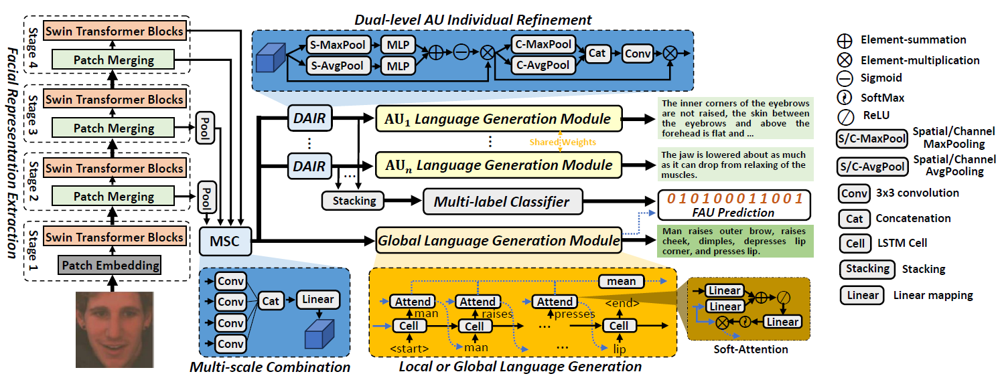
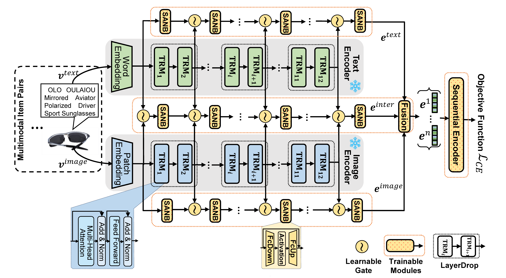
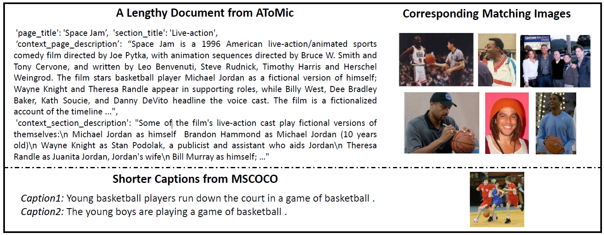
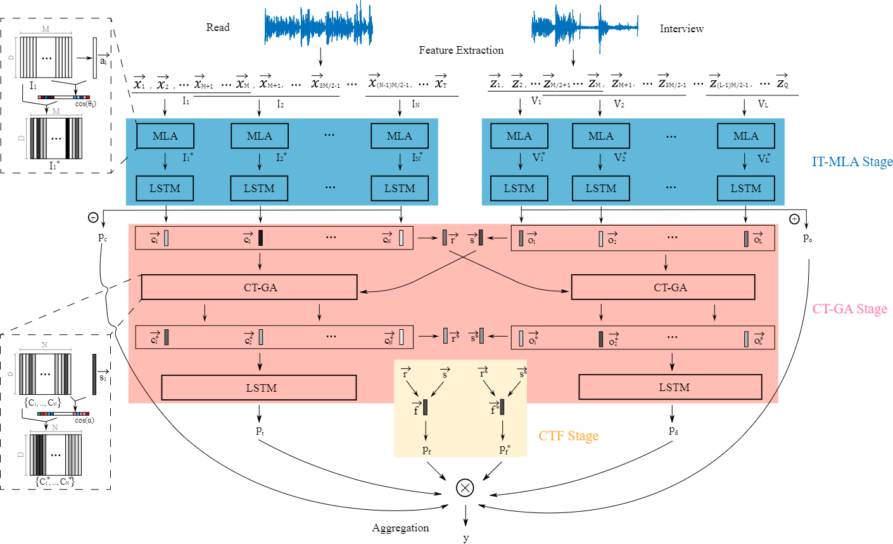
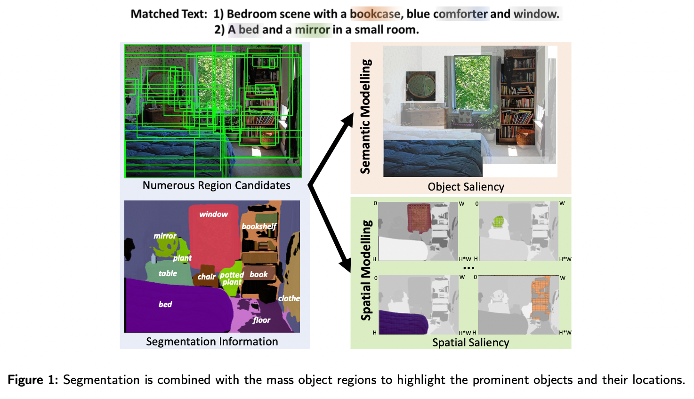
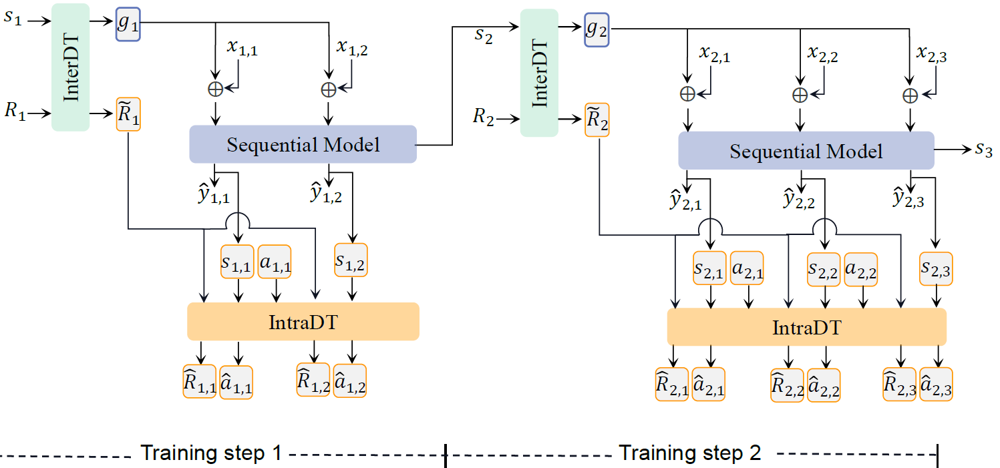
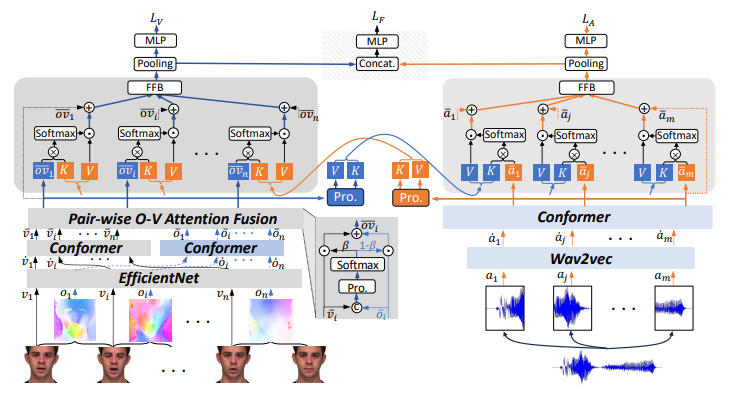
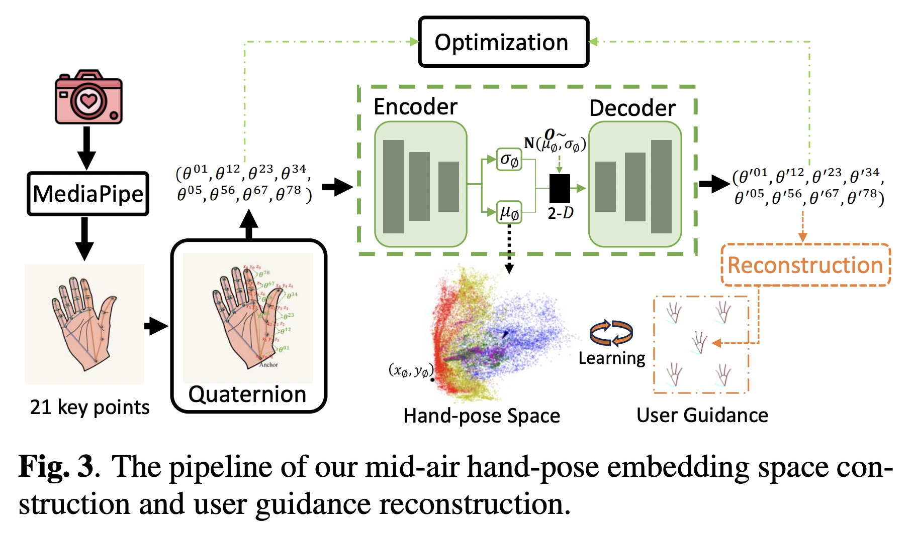
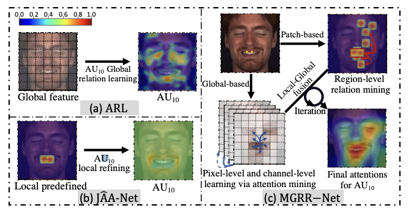
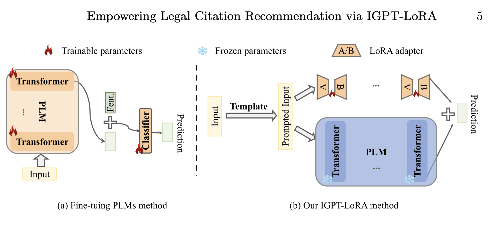
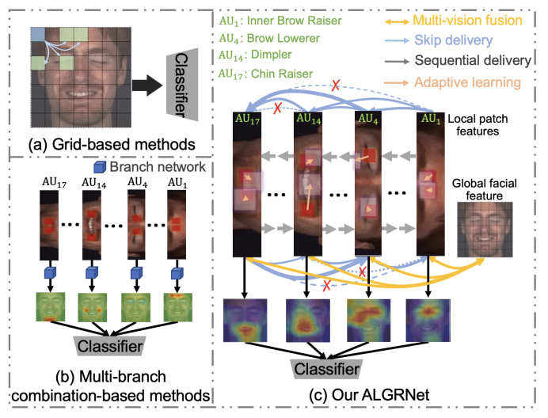
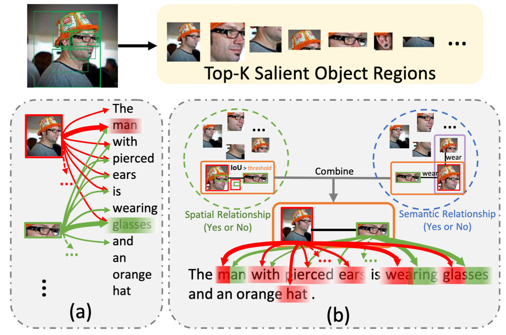
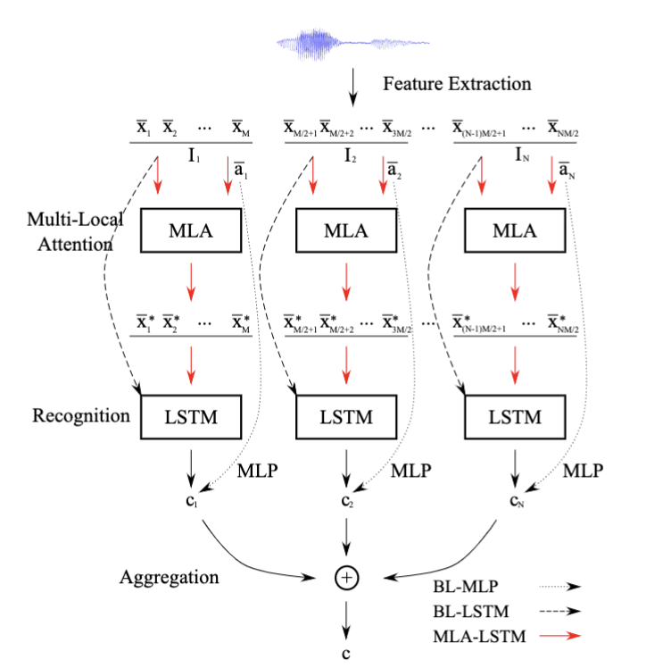
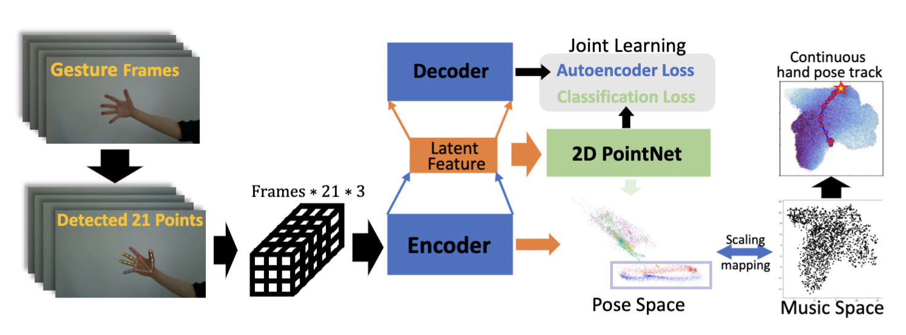
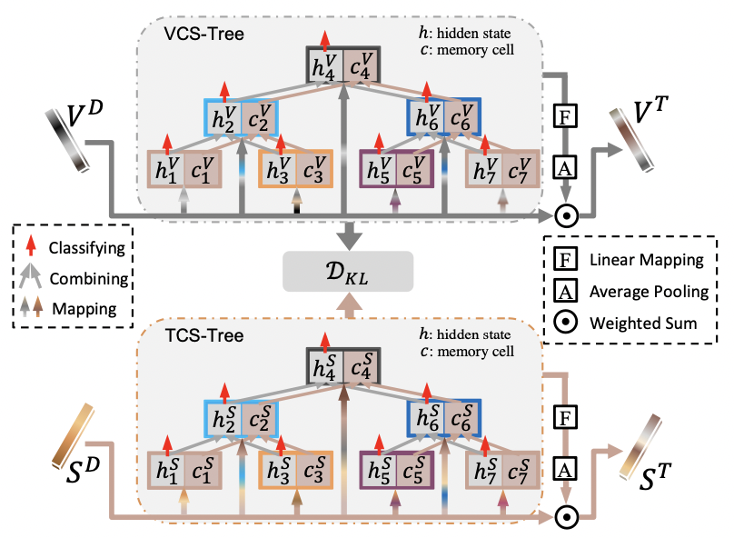
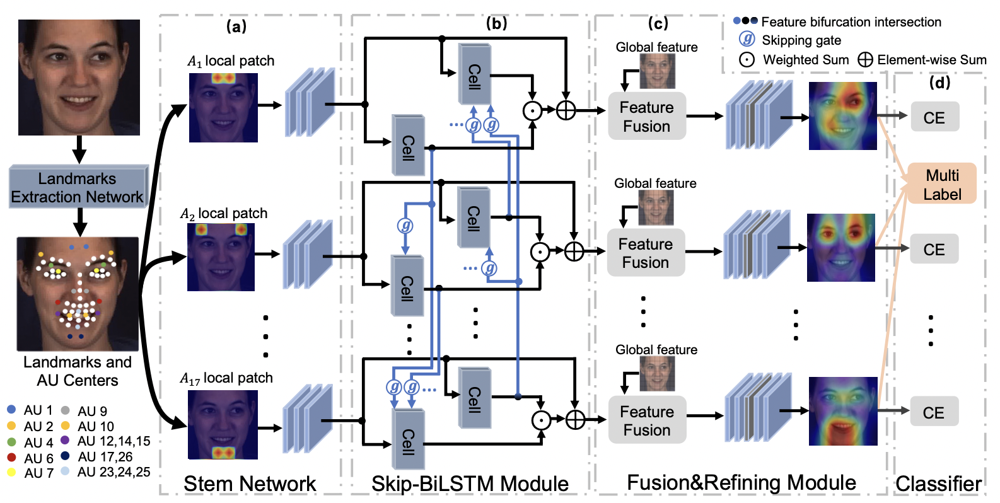
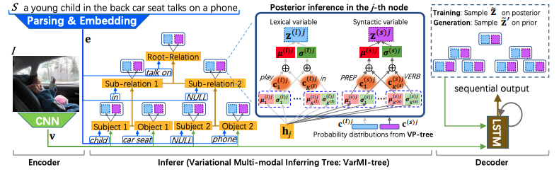
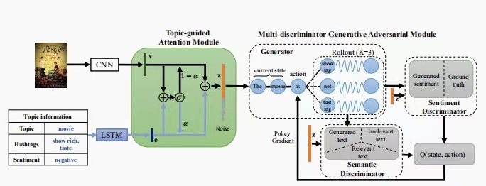
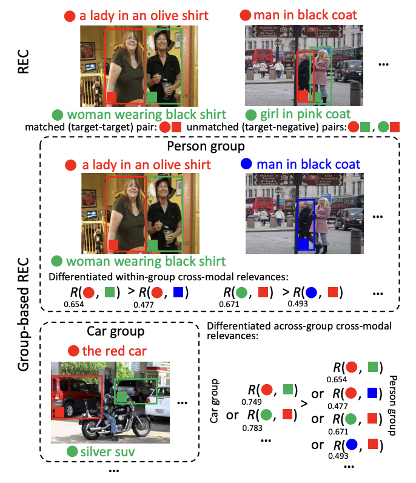
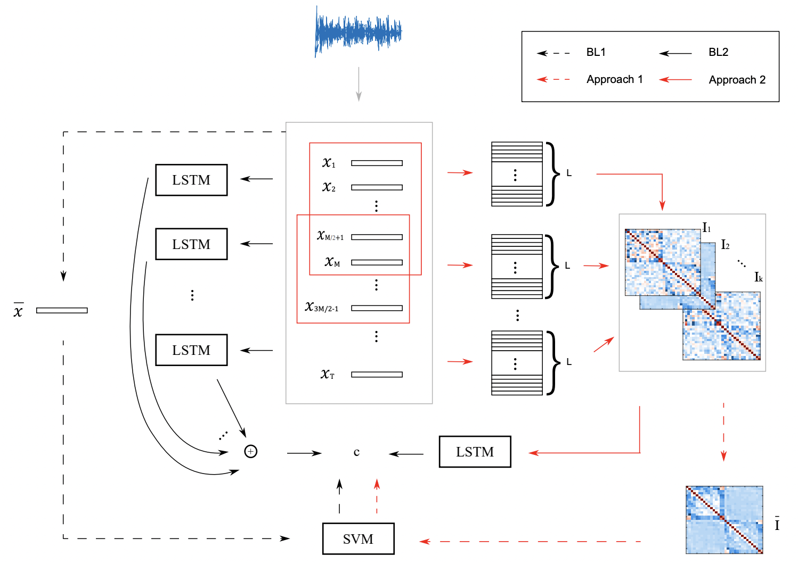
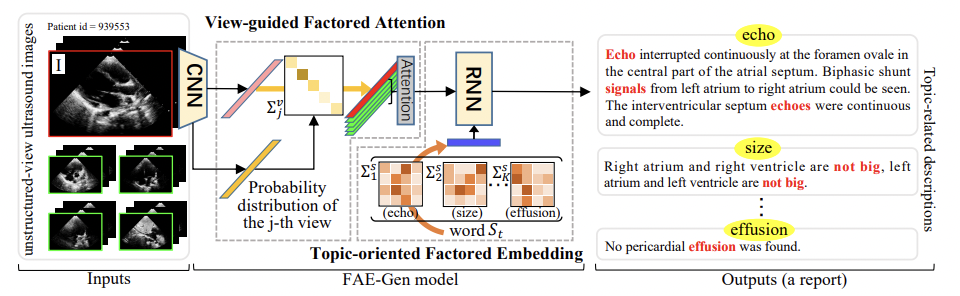